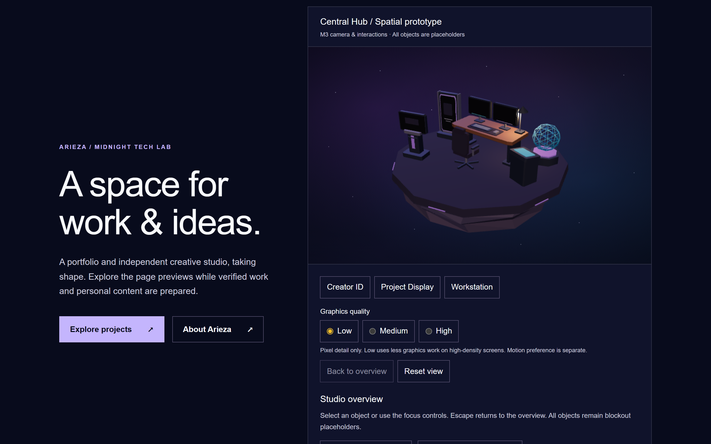
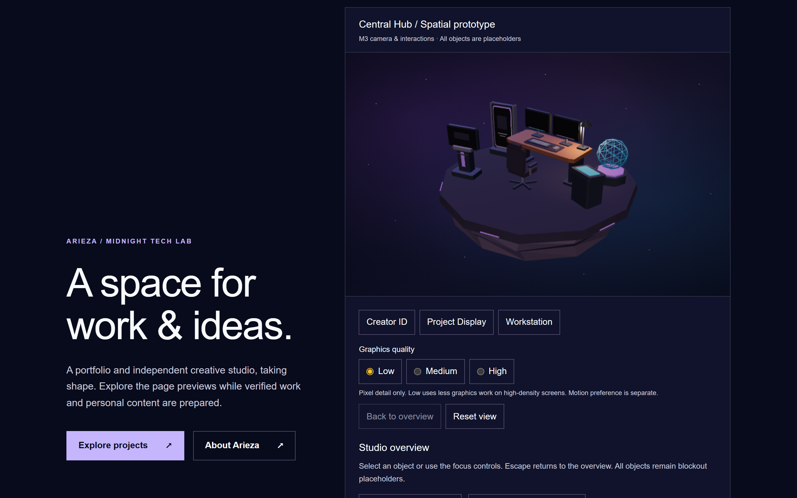
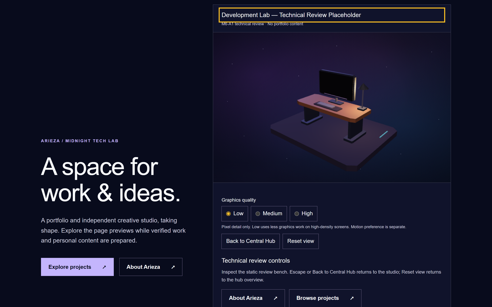
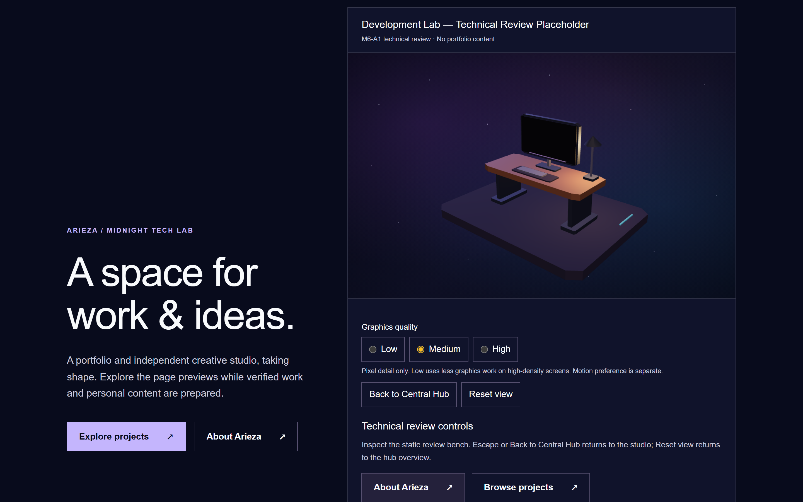
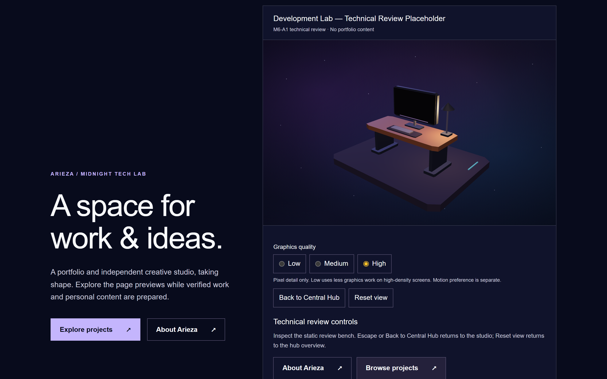
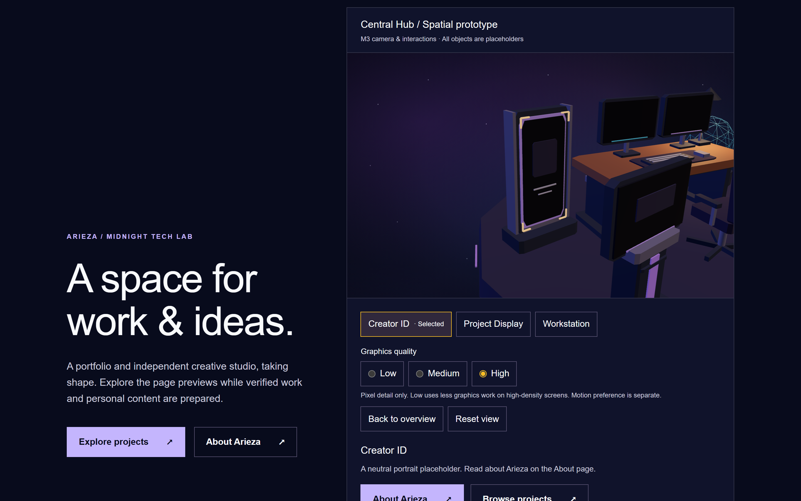
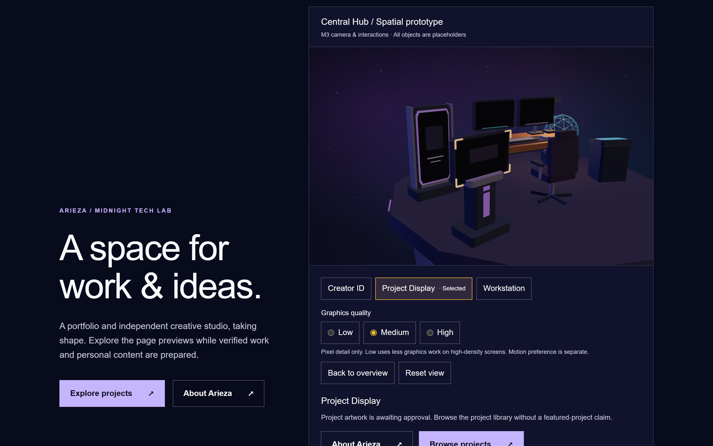
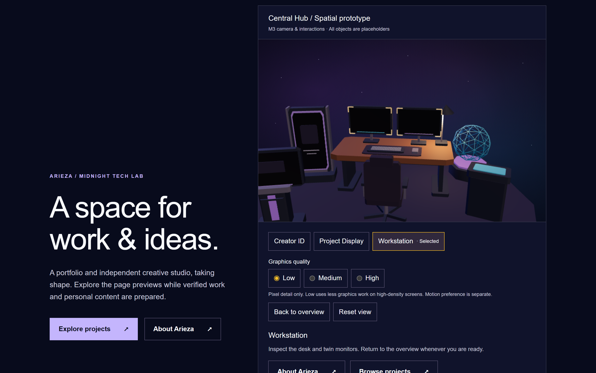

Original procedural placeholders only. Same 440px panel and desktop shell. Successful switching retains one Canvas; no portfolio/project/skill claims. Quality changes density only. No FPS or physical GPU claim.







